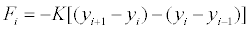
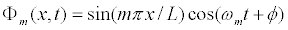
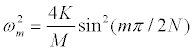

Let yi= y(xi,t) represent the time-dependent displacement of a particle of mass M with horizontal position xi. Each particle is coupled to its nearest neighbors with a spring in order to form a chain of oscillators. It is assumed that the particles move only in the y-direction and that the force Fi on the i-th particle depends on the relative displacement between that particle and its nearest neighbors. The force on the i-th particle can be written as

where K is the Hook's law coupling constant. Because the first and last particles in the lattice are fixed, we compute particle accelerations starting with the second particle and continuing through the lattice until we reach the next-to-last particle. This, the particles in a chain with N oscillators are labeled [0, 1, 2, .... N-1, N, N+1].
One way of understanding a chain of N coupled oscillators of length L and mass M is to study the motion of its normal modes. A normal mode is a special configuration (state) where every particle moves sinusoidally with the same angular frequency ωm. The m-th mode Φm of the oscillator chain of length L is
 .
The system stays in a single mode and every particle oscillates with constant angular frequency ωm if the oscillator chain is initialized in a single mode.

An arbitrary initial configuration can be expressed as sum of these normal modes.